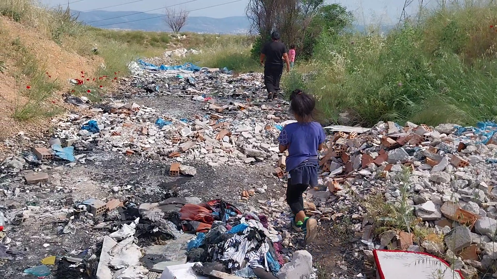
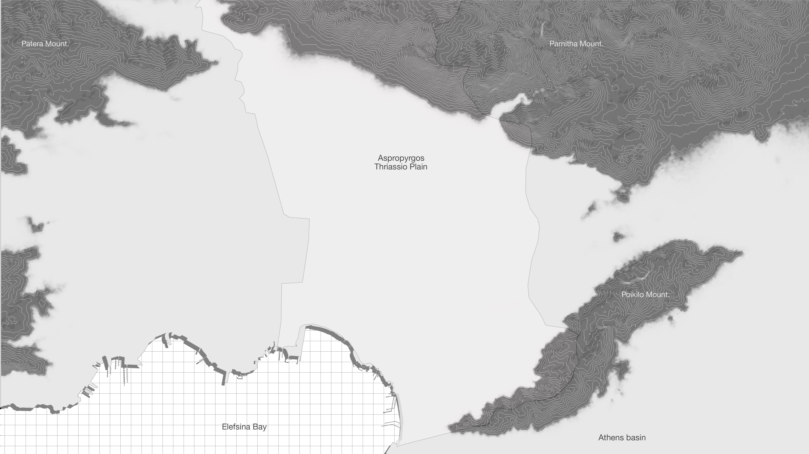
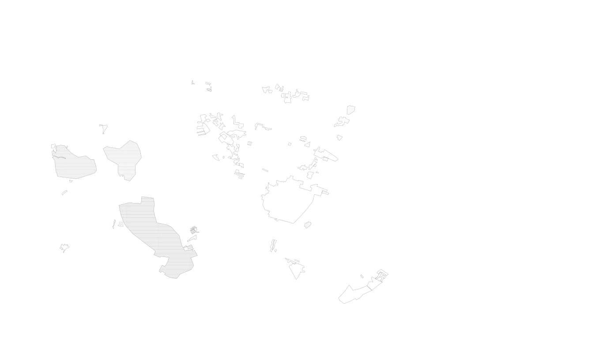
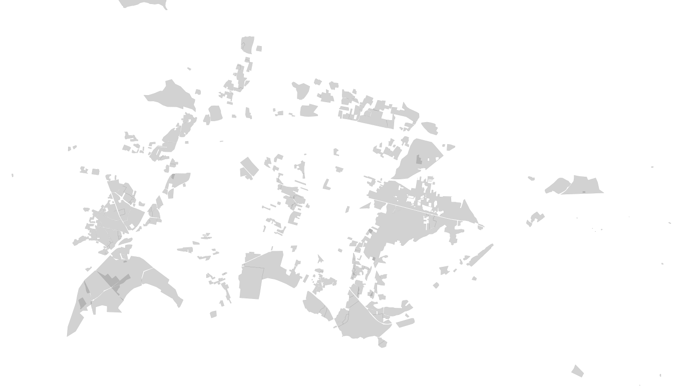
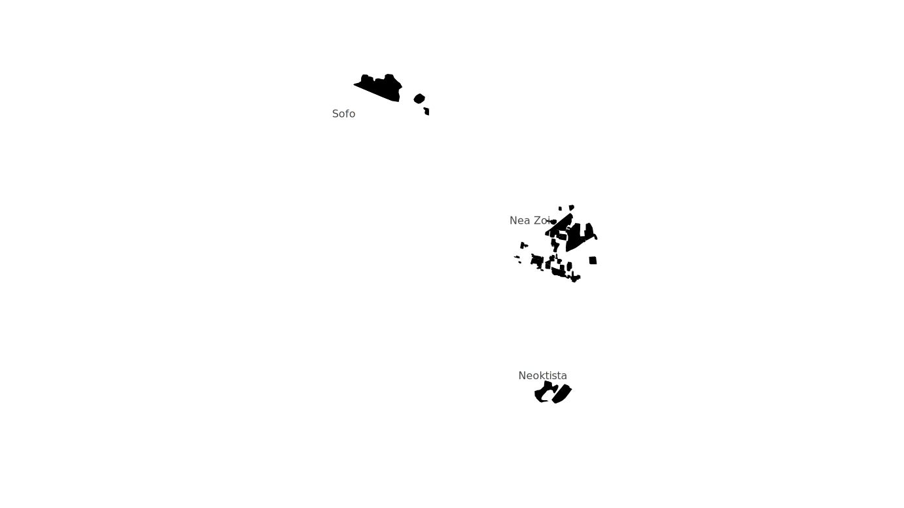

My journey from Athens’s city center to the Romani settlements of Aspropyrgos begins with crossing Poikilo Mountain.
Much more than just a geophysical border separating the Athenian basin from the Thriassio Plain, the mountain stands
as a symbol of the spatial, social, and economic division between Athens and its industrial satellite, Aspropyrgos.
As I crest the hill, Elefsina Bay unfolds below, and to the left, the Skaramanga Hellenic Shipyards stretch along the
coastline. A few minutes later, the smokestacks of Hellenic Petroleum’s refineries rise, with the Fyli landfill –
Europe’s largest and long overdue for closure – dominating the background. Heading north towards Mount Parnitha,
the road passes a vast, empty lot where the train station sits, recently privatized and destined to become Greece’s
largest logistics hub, a key point in Europe’s supply chain. An entire industrial patchwork stretches across the plain.
Beneath this vast industrial surface lies a sharper division in how the area is perceived. For the Greek government,
Thriassio Plain embodies the beating heart of Greece’s economic aspirations, attracting foreign investments, and
contributing around 40% of the nation’s GDP. However, locals always refer to their home town as ‘Athens’ backyard,’ a
place burdened by the costs of industrialization without reaping its rewards. To them, Aspropyrgos has become a dumping
ground for everything undesirable – factories, pollution, and racialized communities alike.
Anti-Romani sentiment

Residents of Sofo walking inside the surrounding wastelands to reach the only availiable water source.
Aspropyrgos, a town originally built in the mid-20th century to house factory workers, remains home to working-class
families and older generations of refugees. However, the growing industrial and logistics sector has more recently
attracted new migrants from Asia and the Balkans, as well as Greece’s third-largest Romani community. Decades of neglect
and industrial exploitation bred deep frustration, which has been harnessed to fuel racist narratives, particularly against
the Roma. The community is portrayed as contributing to the town’s decline, reinforcing the sentiment that they are as
unwelcome as the industries themselves. Anti-Romani sentiment, shared by both non-Roma Greek residents and local authorities,
has led to severe spatial and infrastructural segregation on the basis of race. While non-Roma Greeks live near the town center,
the Roma have been systematically pushed to secluded locations of the urban periphery, severely impacted by heavy
industrialization and cut-off from basic infrastructure
(Karavola 2023).
The settlements of Sofo and Nea Zoi exemplify this racialized expulsion. Surrounded by sparse landscape, animal sheds,
and mounting piles of waste, Sofo is a place that can barely be called habitable. The municipality of Aspropyrgos
denies the community access to basic services, such as electricity, running water, and sewage systems. Dirt tracks
riddled with potholes serve as roads, and makeshift shacks built from discarded materials scavenged from nearby waste
piles substitute for homes. Nea Zoi, similarly deprived, lies next to the Fyli landfill, established in 1982 by the
Greek government as a temporary housing solution for the Roma. Decades later, it remains an unrecognized settlement,
bereft of basic infrastructure (Lydaki 1997).
Both settlements sit on land contaminated with high radiation levels,
water pollution, and soil toxins, a direct result of unchecked industrial activity
(Antilogos 2020).
Interactive map. Toggle buttons on the right to see landuses and recycling networks




The forced proximity of Romani settlements and industrial wastelands is not incidental, but a deliberate aspect
of racialized economic exploitation. Local industries and municipal authorities have actively turned these marginalized
spaces into ‘sacrifice zones’ for the byproducts of industrial growth. In Sofo, local industries, benefiting from
weak regulations and oversight, avoid the costs of proper waste management by dumping construction debris, industrial
waste, and toxic materials near the settlement
Similarly, the indifference towards the Roma of Nea Zoi
fosters a zone where the landfill can expand towards the settlement with little oversight. These environmental hazards
degrade the land, turning it into uninhabitable zones where no one wants to live. In this sense, the Roma are not only
socially marginalized, they are also physically confined to the most poisoned spaces, the areas that bear the heaviest
consequences of industrialization.
Environmental violence and racial capitalism
However, environmental violence inflicted upon the Roma cannot be interpreted merely as a byproduct of industrial expansion.
Rather, we must recognize “the role of racism in enabling key moments of capitalist development,” as articulated
by Cedric Robinson’s concept of racial capitalism (Robinson 1983). Gargi Bhattacharyya expands on this idea, explaining
that racial capitalism is not simply about the differential treatment of racial groups, but “an account of how the
world made through racism shapes patterns of capitalist development.” In this sense, racial capitalism is best understood
as a form of “racecraft” within the economic system, where racialization is instrumentalized to sustain economic
exploitation (Bhattacharyya 2018). Through this lens, the intertwined nature of environmental violence and economic
exploitation in Aspropyrgos is starkly evident when we consider the Roma’s dependence on waste collection for survival.
“We all work in scrap metal.”
–Roma resident of Sofo.
Waste incineration residues in Sofo.
For most Roma, informal recycling within these industrial wastelands is their primary source of income. This labor, however,
yields very little and studies show that informal recyclers earn no more than 11 euros per day (Fotopoulou 2017),
keeping the majority of Romani families well below the poverty line. Far from a matter of choice, this work
represents a survival strategy, an adaptive response to scarcity. Equipped only with pickup trucks, Roma wander
around the industrial zones of Thriassio, collecting discarded materials like electrical equipment, tires, and
metal bars to sell as scrap. On bad days, people are forced to scavenge through Fyli’s landfill for a few kilos
of metal. On better days, industries may informally hire them to collect steel bars from construction sites,
bypassing official waste disposal processes. Regardless of the circumstances, their forced proximity to these
toxic wastelands is both a consequence and a condition of their economic role: they are expected to extract value
from the very materials discarded by a system that continues to marginalize and exploit them.
To add value and get higher prices, the Roma sort and process the collected waste on site, within the settlements.
This involves dismantling, cleaning, and changing the physical form of the materials in order to extract pure materials.
Since Roma do not have access to proper machinery, burning is the only way to separate metal from cables, electrical
appliances and other items. As a result, on cloudy, windless days, large fires are lit and everything is thrown in.
The process is labor intensive, dangerous to the environment, and involves the entire community, including women and
children. Burning plastics, Freon from refrigerators and other materials releases toxins into the air and soil.
While the valuable scrap is collected and taken to scrap yards, the non-recyclable parts and toxic residues are
left behind, further polluting the land and endangering the health of the community.
As one local informal recycler described:
“Sometimes, when the fire settles after the rain you see people walking around in the rubble, dazed from the toxic fumes.”
Filling gaps in the formal recycling system
Despite being the most affected by the pollution caused by both industrial activity and informal recycling, the Roma are scapegoated
as ‘hygienic bombs.’ In 2019, an epidemiological study revealed dangerously high levels of hexavalent chromium in the Nea
Zoi settlement, a toxic and carcinogenic substance linked to illegal industrial waste disposal (ΕΔΣΝΑ, 2019). Additionally,
scientists found high concentrations of dioxins in the soil mainly coming from combustion residues. The Aspropyrgos municipal
council, however, selectively addressed only the latter, focusing on the Roma’s waste-burning practices. By doing so,
the authorities perpetuated antiromani rhetoric, shifting blame onto the community while ignoring the industrial actors
as the root of the problem.
In reality, scapegoating the Roma serves a dual purpose for local authorities: on the one hand, it diverts public anger
away from industrial polluters and onto an already marginalized social group; on the other hand, it maintains a
mutually beneficial arrangement between the state and local industries, who both profit from the Roma’s labor
in waste management
(Smyrniotis and Choleva 2020).
For the state, outsourcing waste management to informal recyclers fills gaps in the formal recycling system,
while sparing the government from investing in expensive infrastructure. Greece’s recycling system is narrow
and technologically underdeveloped, heavily relying on manual labor. By forcing Roma to take on the most
dangerous and labor-intensive tasks, such as scavenging landfills and collecting waste door-to-door, the
formal sector boosts recycling rates while avoiding the costs of formal waste management. With less waste
left for disposal, the state saves money and time on collection and transport. Additionally, the manual
sorting and separation done by Roma workers eases the burden on recycling centers. Finally, their precarious
employment status frees the state from providing wages or benefits (Smyrniotis and Choleva 2020).
Local industries also benefit from this arrangement. By offloading waste to informal recyclers, industries
sidestep the costs of proper disposal. Roma process the illegally discarded materials, selling the
valuable scrap to small scrapyards, which then resell it up the supply chain, eventually fueling local
industries and international markets with necessary raw materials (Wilson, Velis, and Cheeseman 2006;
Smyrniotis and Choleva 2020). As the materials move up the chain, their value increases, but because
they originate from the black market, they remain cheaper, free from taxes, and the wage costs. This
creates a steady, cost-effective supply of raw materials for manufacturing industries, replacing more
expensive imported options and allowing factories to significantly reduce costs at multiple stages of
production (Smyrniotis and Choleva 2020).
The struggles of invisibilized labor
Meanwhile, the Roma remain trapped at the bottom of the secondary materials trade, performing underpaid
and invisibilized labor. The more exploited and marginalized their work, the greater the profit
margins for the industries. It is on this inseparable system of labor exploitation and environmental
destruction that Aspropyrgos’ engine of growth finds its foundation. The life of the steel
molecules that build the world’s great cities begins right there, the moment a laundry wire,
a button, or even a nail is picked up by an informal recycler. Acting as urban decomposers,
they transform the discarded and unwanted into the raw materials that fuel industrial development-but
at a profound human cost.
However, it is also where the potential power of the people resides. As Christos Karakepelis,
filmmaker of
“Raw Material” (2011)
observes:
“Athens is a small city. If [informal recyclers]
stop collecting metal for a week, the national economy will collapse. If they organize a strike
for a month, the industry and the real estate stock market would be paralyzed, as the price
of metal bars would skyrocket”
(Smyrniotis and Choleva 2020).
Though such a strike has yet to
happen, one thing is clear in Aspropyrgos: the fight for environmental justice cannot be separated
from the struggles for racial and economic justice.
As members of the community themselves say:
“We want to bring the water and the light to the settlement.
We have repeatedly asked the mayor to give us proper houses.
We need to stop living and working next to this waste.
This is our fight, to make Sofo a better home for our children.”